NUDURI ALE PICTORULUI ROMÂN
NICOLAE GRIGORESCU
Dupã ce arta româneascã a fost dominatã, mai multe secole, de arta bizantinã ºi de religia creºtinã, cu toate restricşiile lor, nudul a pãtruns în pictura româneascã ºi prin opera lui Nicolae Grigorescu.
În anul 2019 Romfilatelia a introdus în circulaşie, în ziua de 15 februarie, emisiunea de mãrci poºtale intitulatã Nuduri în pictura româneascã, în care sunt ilustrate cele mai apreciate opere de acest gen ce au ieºit de sub penelul lui Grigorescu.
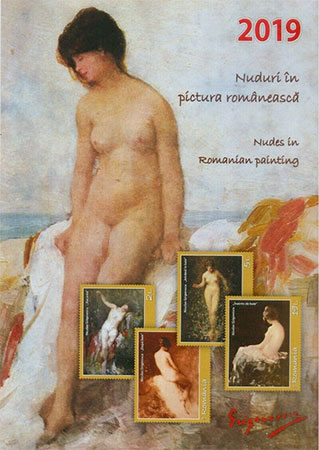
De-a lungul anilor administraşiile poºtale româneºti au emis mai multe timbre care reproduc operele cele mai cunoscute ale pictorului. Link pe acest site.
„Rar sunt cei dintre pictorii noºtri care sã fi simşit adânc farmecul feminin, acea cãldurã ce emanã din trupul ºi faşa femeii, acel flux nervos ce strãbate fiinşa ei tânãrã”, spunea George Oprescu.
În picturile ale cãror imagini sunt reproduse pe timbre, se regãsesc modelele care-l atrãgeau cel mai mult pe Nicolae Grigorescu, respectiv cele delicate, încã neformate, zvelte ºi mlãdioase, în care totul era numai promisiune ºi nimic ajuns la maturitate.
Sã ne aruncãm o privire la singurul nud a lui Grigorescu reprodus pânã în anul 2019 pe un timbru românesc. Este vorba despre timbrul ce reproduce pictura "Nud, sau "Nud la şãrmul mãrii", emis în 1971. El reapare (vezi mai jos) pe ºi ilustraşiile celor douã noi Plicuri prima zi.
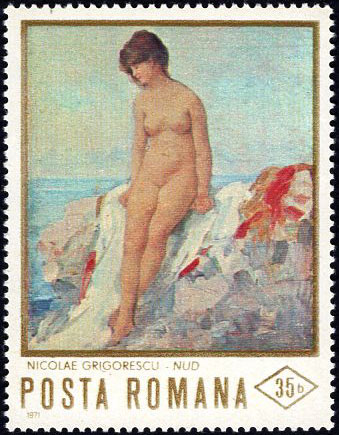
Pe timbrul emis în 2019, cu valoarea nominalã de 2 lei, este ilustratã imaginea tabloului Bacanta, cel mai reuºit dintre toate nudurile pe care le-a pictat Nicoale Grigorescu. Este un tablou de dimensiune mijlocie ºi a fost pictat cu o pasiune ºi o cãldurã ce s-au transmis în întregime acestei compozişii plastice remarcabile. Timbrul cu valoarea de 3 lei reproduce lucrarea Dupã baie, în care personajul este vãzut din spate, manierã picturalã ce pune mai bine în valoare linia delicatã a formelor – curbura gâtului ºi întreaga unduire a corpului.
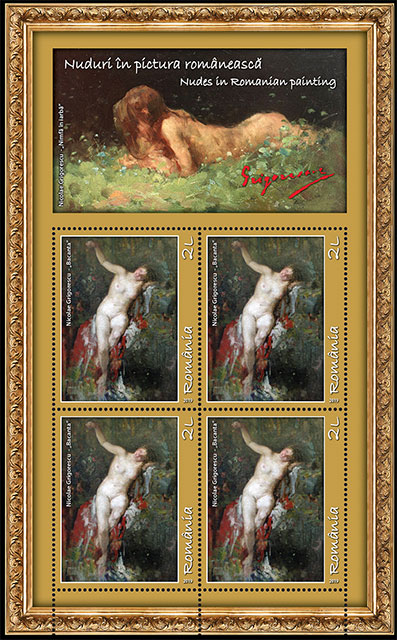
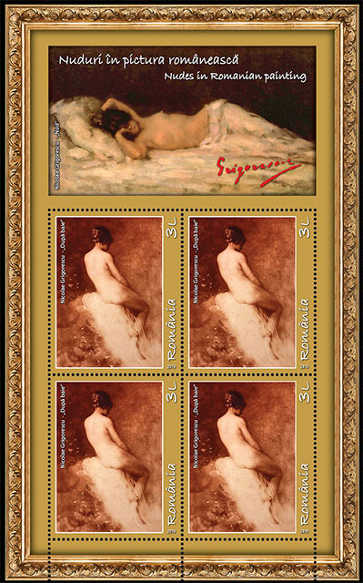
Timbrul cu valoarea de 5 lei, care ilustreazã pictura Intrând în baie ºi timbrul cu valoarea de 19 lei, care redã pictura Înainte de baie, pãstreazã amândouã armonia cromaticã ºi etalarea cu fineşe a formelor într-o prezentare poeticã, care îmbinã ambianşa peisaj-luminã, plinã de lirism ºi îndemn la visare.
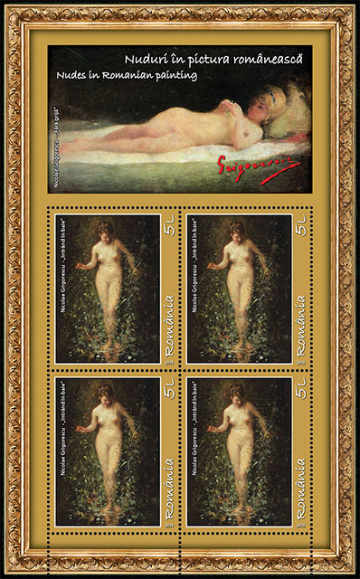
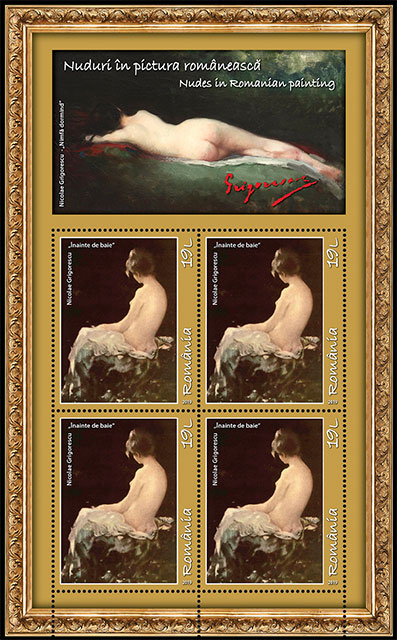
Pe plicul „prima zi” este redatã ca ilustraşie pictura Nud pe malul mãrii, ce contureazã, pe fundalul mãrii öi al cerului, silueta elegantã, nobilã a unei femei privind romantic într-o parte, pictura ce îmbinã tratarea realistã a nudului cu elemente impresioniste în interpretarea peisajului.
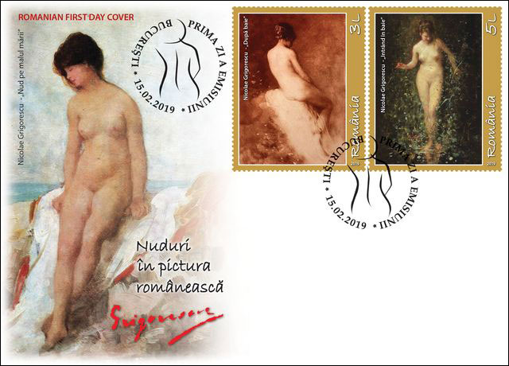
Pictat pe malul Mãrii Negre, în dreptul localitãşii Viile, de lângã Constanşa, tabloul a avut drept model un personaj feminin cunoscut sub numele de Zettina Urechia.
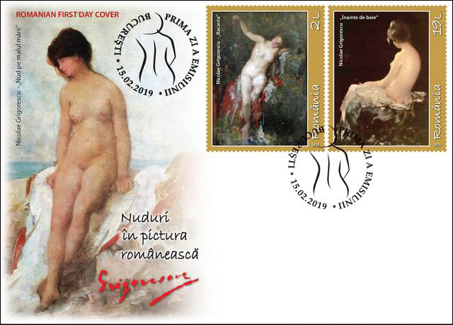
Timbrele au dimensiunea de 42 x 52 mm ºi au fost paginate în coli de 20 de timbre fiind machetate de cãtre Mihail Vãmãºescu. Au fost tipãrite în sistem offset la 5 culori pe hârtie cromo-gumatã (Anglia). În scop filatelic, emisiunea a fost paginatã ºi în minicoalã de 4 timbre cu manºetã ilustratã (120 x130 mm), într-un tiraj de 24.800 minicoli (6.200 serii). Sursa: Comunicat de presã de la Romfilatelia.
Tirajul minicolişelor apare ca fiind foarte mic, lucru ce poate fi însã explicat prin valoarea lor facialã ridicatã (124 Lei), ceea ce reduce imediat numãrul cumpãrãtorilor. Se cunosc ºi minicolişe în care câte douã timbre de jos au fost indepãrtate, pentru a se înjumãtãşi preşul, pãstrându-se însã reproducerea de sus, fãrã valoare facialã. Aceasta mãreºte numãrul cumãpãrãtorilor, dar micºoreazã în acelaºi timp numãrul minicolişelor rãmase întregi, probabil cã spre bucuria celor care au investit pentru ca sã le aibã neatinse. Oricum ar fi, timpul "timbrelor pentru mase" sunt deja într-un trecut îndepãrtat...
Aº mai menşiona cã, deºi nu mai colecşionez timbre, preferând doar sã scriu despre ele, am cumpãrat totuºi aceste minicolişe (pe eBay, plãtind $ 35, cu cheltuielile postale incluse). În acest fel am intrat, fãrã sã ºtiu dinainte, în jocul întreprinderii Romfilatelia, care se bazeazã pe românii aflaşi în strainatate pentru a-ºi realiza profiturile financiare. Ceea ce este din punct de vedere financiar prea mult pentru majoritatea filateliºtilor din şarã este considerat cumva acceptabil pentru mulşi dintre cei aflaşi în strãinatate. Sã nu uitam cã recent Ministerul de Externe din România a cerut tuturor ambasadelor sale sã totalizeze ºi informeze despre câşi cetãşeni români au emigrat. Totalul general este de 5,6 milioane, adicã circa o treime din câşi români se aflã în România de azi. Sursa.
Actualizare
Dupã câtva timp scurs de când am primit colişele, le-am mutat într-un clasor cu alte colişe ce reproduc nuduri. Din pãcate ele au "pãlit" imediat în prezenşa unor colişe emise de Principatul Liechtenstein în 1977, imprimate de Imprimeria de stat din Austria ºi dedicate aniversãrii a 400 de ani de la naºterea lui Rubens. Diferenşele provin din aceea cã mãrcile din Liechtenstein sunt gravare ºi apoi imprimate într-o calitate înaltã, deºi au fost emise cu peste 40 de ani înaintea mãrcilor româneºti. Scanul de mai jos, care reproduce jumãtatea de jos a minicoalei, nefiind în relief, nu dezvãluie decât o parte a frumuseşii colişei gravate din Liechtensein. Pe lângã aceste mãrci reproducerile dupã Grigorescu, deºi foarte frumoase, apar ca fiind fade. Desigur cã gama cromaticã mai largã a picturii lui Rubens a contribuit ºi ea la diferenşa de impact vizual al minicolişelor respective.
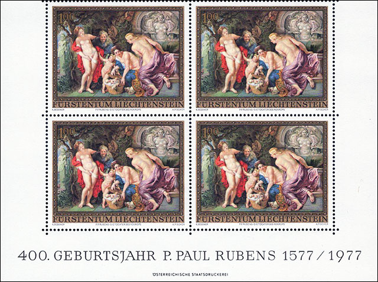
ANEXÃ
Aceastã Anexã pune la dispozişie informaşii suplimentare despre operele de artã reproduse pe minicolişele româneºti.
Nudurile în opera lui Nicolae Grigorescu
Nudurile au reprezentat un motiv mai puşin folosit în opera lui Nicolae Grigorescu. Dupã momentul studiilor de Paris, motivul nudului a fost din ce în ce mai rar abordat de cãtre pictorul român. Dupã ceva vreme, motivul a revenit în creaşia grigorescianã, a devenit mai frecvent. De aceastã datã, nudurile nu mai sugereazã un aspect de castitate, puşinãtatea formelor din picturile cu şãrance fiind abandonate.
Modelele care-l atrãgeau cel mai mult pe Nicolae Grigorescu, erau cele delicate, încã neformate, zvelte ºi mlãdioase, zurlii, în care totul era numai promisiune ºi nimic ajuns la maturitate, aºa cum în mediul rural sunt codanele cu vârsta între treisprezece ºi cincispreceze ani. Dar nici cu aceastã viziune asupra femeilor ºi a tinereşii lor, artistul nu era pe deplin mulşumit. Adesea, membrele inferioare ºi uneori braşele, deºi se preferã a fi lungi ?i subşiri, pentru pictor erau dispropor?ionate, ele neavând niciun suport în realitate. În concepşia lui Nicolae Grigorescu, trupul copilãresc pe care-l înfãşiºa cu elemente plãpânde ºi delicate, chiar feciorelnice uneori, va face ca orice atitudine femininã sã fie plinã de graşie ºi de gingãºie. El era convins cã o astfel de reprezentare neprihãnitã nu o poate avea o femeie cu forme pline, tumultuoase.
Nicolae Grigorescu a pictat ºi femei ale cãror forme erau nestãvilite în nudurile pe care le-a fãcut, cu toate cã nu se poate spune cã aceastã tematicã l-ar fi incitat în mod special. Se ºtie cã în atelierul lui Sébastien Cornu, unde a studiat ºi Grigorescu, se fãceau ºedinşe de picturã dupã model gol. Aºa este lucrarea intitulatã Izvorul de la Muzeul de Artã din Braºov ºi schişa pentru o scenã anticã sau biblicã denumitã Dupã baie de la Muzeul Naşional de Artã al României. Dupã momentul studiilor de Paris, motivul nudului a fost din ce în ce mai rar abordat de cãtre pictorul român. Dupã ceva vreme, motivul a revenit în creaşia grigorescianã, a devenit mai frecvent. De aceastã datã, nudurile nu mai sugereazã un aspect de castitate, recte - puşinãtatea formelor din picturile cu şãrãnci. Nudul din Colecşa Elena ºi Dr. I. Dona, intitulat Nud la malul mãrii, este foarte probabil a fi fost fãcut pe plajã la Constanşa. O compozişie asemãnãtoare este ºi nudul de la Muzeul Zambaccian. George Oprescu a opinat cã persoana care a pozat goalã nu poate fi un model de profesie, deoarece are faşa acoperitã, mascând-o, ea nedorind sã se ºtie cã pozat goalã în faşa lui Grigorescu.
Cele douã modele, ca ºi cel din pictura Intrând în apã, din colecşia Muzeului Simu, au o vechime mai mare, au formele mai generoase decât orice şãrancã figuratã de Grigorescu în portretele sau peisajele sale. Celor descrise pânã acum li se mai adaugã cel denumit Înainte de baie, cel vãzut din spate ºi cel numit Nud de Alexandru Vlahuşã, care astãzi este cunoscut sub numele Dupã baie.
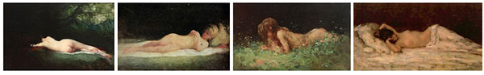
Cel mai reuºit dintre toate nudurile pe care le-a pictat este cel denumit Bancanta. Este un tablou de dimensiune mijlocie ºi a fost pictat cu o pasiune ºi o cãldurã ce s-au transmis în întregime acestei bucãti remarcabile. Artistul a reuºit sã armonizeze plastic toate elementele compozişionale ale imaginii înfãşiºate, chiar ºi amãnuntele surprinse pe figura surâzãtoare, într-un extaz exprimat fãrã nicio reşinere.
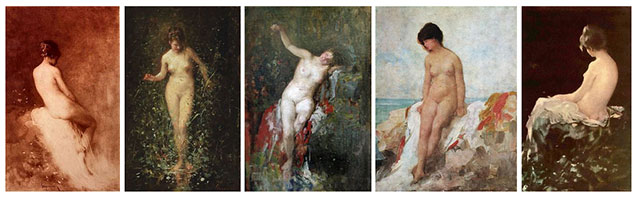
Apropiate ca aspect fizic, cu forme plãpânde, de şãrãncile din motivul portretelor rurale, mai existã douã nuduri. Cel numit de Vlahuşã Nimfã dormind, în care decorul sugereazã vag ideea de naturã, ºi Fãrã grijã în care apare o copilã aºezatã pe spate, fãrã nicio reşinere. Castã în goliciunea ei, ea ridicã o floare cu ambele mâini la nivelul ochilor ºi o priveºte. Se poate constata cã între figura excitantã ºi provocatoare a Bancantei, prin comparaşie cu fizionomia acestei copil, existã o mare diferenşã. Fiecare permite sesizarea aspectelor principale în reflexia imaginii femeii în psihologia complexã a artistului român. Sursa.

| Created: May 23, 2019. Revised:
September 10, 2019.
Copyright © 2019 by Victor Manta, Switzerland/USA. All rights reserved worldwide. |
|